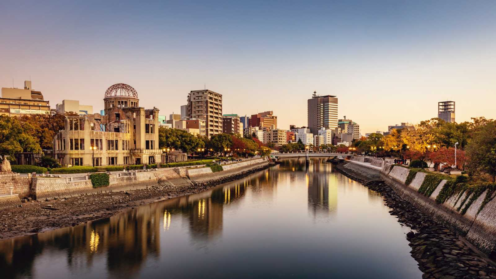

Endroits à explorer et à découvrir :
|  | |||
|---|---|---|---|
| Hiroshima | Tokyo | Kyoto | Osaka |
Cliquez sur les images de Hiroshima, Tokyo, Kyoto et Osaka pour obtenir davantage d'informations et découvrir des suggestions de restaurants, des attractions touristiques ainsi que des informations détaillées. Explorez ces destinations en un simple clic et planifiez votre voyage en toute facilité.